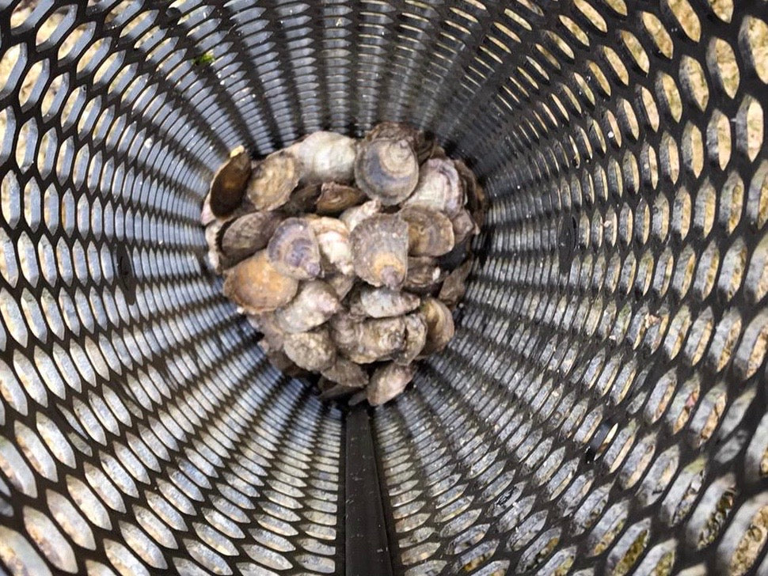

Is Oyster Farming Sustainable?
Journal Entry
Is Oyster Farming a Good Thing? Is Oyster Farming Sustainable?
The short answer is Yes and Yes!

Natural Feeding
Farming of oysters is amazingly sustainable, as once they are placed on site, they need nothing else but clean water, sunshine and a bit of TLC.
This is because oysters, in common with other bivalves such as mussels and scallops, are filter feeders and just consume whatever is in the water naturally. Their food consists of various types of microscopic marine algae called phytoplankton.
And on our farm we are so so lucky as we have the Gulf Stream, a warm water Atlantic drift that brings a conveyor belt of food to our oysters.
Chemical Free
Unlike other forms of aquaculture, we as shellfish farmers, do not use any pesticides, fertilisers or any other chemical on our farm. This means we are not polluting the environment in which we operate.
In fact given the sensitivity of oysters to their environment, particularly in the case of the Native oyster, our goal is to protect and improve our local ecosystem, this is the key that underpins our whole operation. In order to succeed, we have to work with Mother Nature in a sustainable way.

Ecosystem Balance
Our oysters also help in maintaining the local ecosystem themselves. Their filtering activity helps keep the seawater clear so sunlight can penetrate and encourage other plants and animals to grow. There is also emerging research data that oysters are also a carbon sink, removing carbon from the atmosphere. Interestingly enough, the culture structures also provide shelter for many small fish and invertebrates and appear to act as a nursery area, thus further improving the local biodiversity.
Food Production
The health benefits of oysters as a food item are significant:
- They are low in fat.
- They are low in calories.
- They are high in Omega-3s.
- They are a good source of minerals and vitamins.
- They can help reduce blood cholesterol.
And importantly, these benefits are greater or at least as great as compared to other animal products. In combination with the culture process, this means that growing oysters is probably one of the most efficient and environmentally sustainable ways of producing protein we have available to us.
Summary
So in summary, we would argue that Oyster Farming, if done thoughtfully, is a good thing and is a sustainable method of food production. We are growing a natural and chemical free product, that relies upon and helps restore the environment, the result of which is a wonderfully tasty and nutritious food full of the best Mother Nature has to offer.